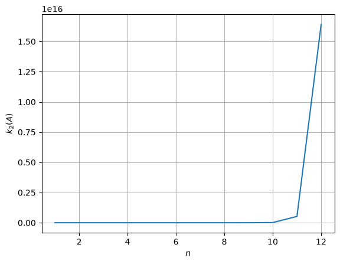
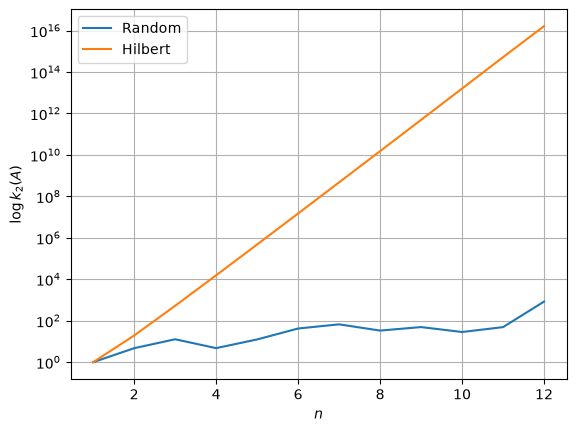

import numpy as np
import scipy
# Setting up the dimension
n = 15
# Creating the test problem (with a Random matrix)
A = scipy.linalg.hilbert(n) # n x n hilber matrix
x_true = np.ones((n, )) # n-dimensional vector of ones
y = A @ x_true # Compute the term y s.t. x_true is a sol.
# Solving the system with numpy
x_sol = np.linalg.solve(A, y)
# Computing the accuracy
E_rel = np.linalg.norm(x_true - x_sol, 2) / np.linalg.norm(x_true, 2)
print(f"The relative error is {E_rel}")
print(x_sol)
The relative error is 23.88120834071822
[ 1.00000053 0.99991355 1.00347528 0.93948622 1.56660238
-2.16863954 12.1001807 -23.31713131 31.25390565 -8.97856657
-30.47104425 58.53190489 -45.260422 20.07403333 -2.27369918]
# We want to print out the condition number of the hilbert matrix A
# for increasing dimension
n_max = 12
condition_numbers = np.zeros((n_max, ))
for n in range(1, n_max+1):
# Define the hilbert matrix
A = scipy.linalg.hilbert(n)
# Compute the condition number
cond = np.linalg.cond(A, p=2)
# Print and save
print(f"Condition number for n = {n}: {cond}.")
condition_numbers[n-1] = cond # "n-1" because range begins by 1!
# Plot the condition number in semilogy plot
import matplotlib.pyplot as plt
plt.plot(np.arange(1, n_max+1), condition_numbers)
plt.grid()
plt.xlabel(r"$n$")
plt.ylabel(r"$k_2(A)$")
plt.show()
Condition number for n = 1: 1.0.
Condition number for n = 2: 19.281470067903967.
Condition number for n = 3: 524.0567775860627.
Condition number for n = 4: 15513.738738929662.
Condition number for n = 5: 476607.2502419338.
Condition number for n = 6: 14951058.64177819.
Condition number for n = 7: 475367356.8766496.
Condition number for n = 8: 15257575563.722723.
Condition number for n = 9: 493153322841.38226.
Condition number for n = 10: 16024980732174.455.
Condition number for n = 11: 522478077916828.5.
Condition number for n = 12: 1.6425917529444498e+16.

# We want to print out the condition number of the hilbert matrix vs random matrix
# for increasing dimension
n_max = 12
condition_numbers_rand = np.zeros((n_max, ))
condition_numbers_hilb = np.zeros((n_max, ))
for n in range(1, n_max+1):
# Define the hilbert matrix
A_rand = np.random.randn(n, n)
A_hilb = scipy.linalg.hilbert(n)
# Compute the condition number
cond_rand = np.linalg.cond(A_rand, p=2)
cond_hilb = np.linalg.cond(A_hilb, p=2)
# Print and save
condition_numbers_rand[n-1] = cond_rand # "n-1" because range begins by 1!
condition_numbers_hilb[n-1] = cond_hilb # "n-1" because range begins by 1!
# Plot the condition number in semilogy plot
import matplotlib.pyplot as plt
plt.semilogy(np.arange(1, n_max+1), condition_numbers_rand)
plt.semilogy(np.arange(1, n_max+1), condition_numbers_hilb)
plt.grid()
plt.xlabel(r"$n$")
plt.ylabel(r"$\log k_2(A)$")
plt.legend(["Random", "Hilbert"])
plt.show()

import numpy as np
import scipy
import scipy.linalg
# Setting up the dimension
n = 15
# Creating the test problem (with Hilbert matrix)
A_random = np.random.randn(n, n) # n x n random matrix
A_hilbert = scipy.linalg.hilbert(n) # n x n hilbert matrix
print(f"Cond. Number Random matrix: {np.linalg.cond(A_random, p=2)}")
print(f"Cond. Number Hilbert matrix: {np.linalg.cond(A_hilbert, p=2)}")
Cond. Number Random matrix: 1082.4660239180134
Cond. Number Hilbert matrix: 3.3660126672602944e+17
import numpy as np
import scipy
import scipy.linalg
# Define the dimension of the problem
n = 1000
#### IMPORTANT: Build test problem
A = np.random.randn(n, n)
x_true = np.ones((n, ))
y = A @ x_true
# Now we forget about x_true, and we solve Ax = y
#### Solve with np.linalg.solve()
x_sol1 = np.linalg.solve(A, y)
print(f"Rel. Err1: {np.linalg.norm(x_sol1 - x_true) / np.linalg.norm(x_true)}")
#### Solve with Forward-Backward
P, L, U = scipy.linalg.lu(A)
Pty = P.T @ y
# Solve the first system
z = scipy.linalg.solve_triangular(L, Pty, lower=True)
# Solve the second system
x_sol2 = scipy.linalg.solve_triangular(U, z, lower=False)
print(f"Rel. Err2: {np.linalg.norm(x_sol2 - x_true) / np.linalg.norm(x_true)}")
Rel. Err1: 1.4251217780503455e-12
Rel. Err2: 1.605738728759874e-12
import numpy as np
import scipy
import scipy.linalg
# Define the dimension of the problem
n = 13
#### IMPORTANT: Build test problem
A = scipy.linalg.hilbert(n)
x_true = np.ones((n, ))
y = A @ x_true
# Now we forget about x_true, and we solve Ax = y
# CHOLESKY DECOMPOSITION
L = np.linalg.cholesky(A)
# Solve the first system
z = scipy.linalg.solve_triangular(L, y, lower=True)
# Solve the second system
x_sol = scipy.linalg.solve_triangular(L.T, z, lower=False)
print(f"Rel. Err: {np.linalg.norm(x_sol - x_true) / np.linalg.norm(x_true)}")
Rel. Err: 4.941146722636538